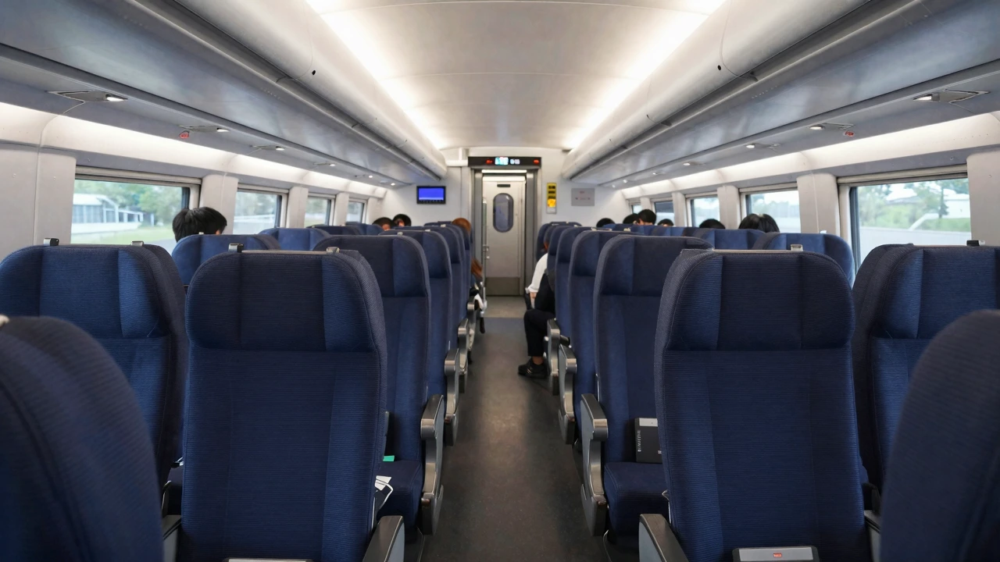

KTX 갤러리

KTX 예매 방법
02
코레일 Talk 앱
코레일 Talk 앱(iOS / Android)으로 모바일 예매, QR 승차권 발급, 실시간 좌석 확인이 가능합니다.
03
역 창구 발권
주요 KTX 역 창구에서 현장 구매 가능. 신용카드·현금 모두 사용 가능하며 서울역에는 영어 지원 직원이 배치됩니다.
부산역 → APHRS 셔틀 연결 안내
KTX로 부산역 도착 후 APHRS 셔틀버스를 이용하면 BEXCO 컨벤션 센터 및 공식 컨퍼런스 호텔까지 이동할 수 있습니다. 소요 시간은 약 40분입니다. 정문 출구의 APHRS 전용 승강장으로 이동해 주세요.
셔틀 예약 →